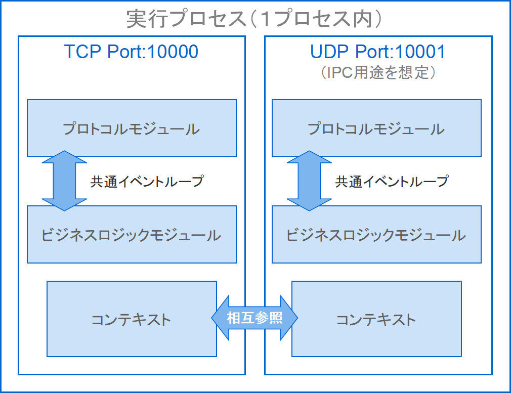
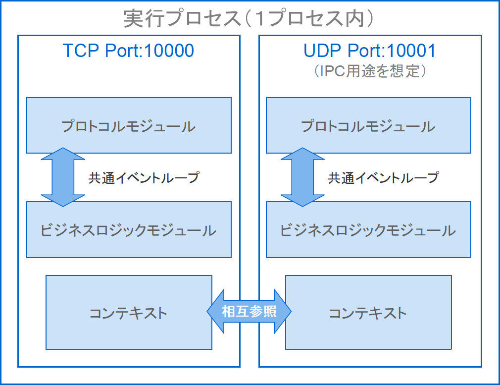

【メイン処理クラスの実装】
はじめに
このクラスはサーバーのエントリポイントとして機能し、SocketManagerクラスをインスタンス化して実行するまでの処理が含まれています。
専用のコマンドを使ってスキャフォールディングできるので、メイン処理をコーディングする必要はなく、プロトコル／コマンド（サーバーコンテンツ）部のクラスをパズルのように組み合わせて適用する作業だけが必要になります。
このようにプロトコルやサーバーコンテンツを自由に組み替える事が可能なので、目的に合わせてサーバーデザインを自由にカスタマイズできます。
この特性を活かして、一つのエントリポイント上でプロトコルが異なる複数のメイン処理を配置する事により、外部ライブラリやサーバーを必要としないサーバー間通信（IPC）を使ったマルチサーバー環境の構築が、アーキテクチャレベルで実現できます。
ここではコマンドを実行してメイン処理クラスを生成した後、そのクラスを使ってカスタマイズできる内容を中心にご紹介します。
メイン処理クラスを生成するコマンドは以下の通り。
生成されたクラスは
新しいメイン処理クラスが増えるとUsageの
専用のコマンドを使ってスキャフォールディングできるので、メイン処理をコーディングする必要はなく、プロトコル／コマンド（サーバーコンテンツ）部のクラスをパズルのように組み合わせて適用する作業だけが必要になります。
このようにプロトコルやサーバーコンテンツを自由に組み替える事が可能なので、目的に合わせてサーバーデザインを自由にカスタマイズできます。
この特性を活かして、一つのエントリポイント上でプロトコルが異なる複数のメイン処理を配置する事により、外部ライブラリやサーバーを必要としないサーバー間通信（IPC）を使ったマルチサーバー環境の構築が、アーキテクチャレベルで実現できます。
ここではコマンドを実行してメイン処理クラスを生成した後、そのクラスを使ってカスタマイズできる内容を中心にご紹介します。
メイン処理クラスを生成するコマンドは以下の通り。
> php worker craft:main MainForTest
[success] メイン処理クラスの生成に成功しました (MainForTest)
生成されたクラスは
app/MainClassの場所にMainForTest.phpというファイル名で格納されます。新しいメイン処理クラスが増えるとUsageの
mainカテゴリに項目が追加されます。
> php worker
SOCKET-MANAGER Framework 1.0.0
Usage:
command [arguments]
main
app:main-for-test Command description
craft
craft:init <初期化クラス名> 初期化クラスの生成
craft:parameter <UNITパラメータクラス名> UNITパラメータクラスの生成
craft:protocol <プロトコルUNIT定義のクラス名> プロトコルUNIT定義のクラスとステータス名Enumの生成
craft:command <コマンドUNIT定義のクラス名> コマンドUNIT定義のクラスとキュー／ステータス名Enumの生成
craft:main <メイン処理のクラス名> メイン処理クラスの生成
craft:setting <設定ファイル名> 設定ファイルの生成
craft:locale <メッセージファイル名> メッセージファイルの生成
app:main-for-testという名前で追加されているのが確認できます。サーバー識別子
メイン処理クラスが生成されると以下のプロパティが確認できます。
ここではコマンドラインフォーマットを定義しています。
そしてサーバーアプリケーション名や、コマンドパラメータは自由にカスタマイズできます。
例えばコマンドパラメータにホスト名を追加したい場合は以下のようにします。
ちなみに"はてな（?）マーク"は最後尾の連続したパラメータにしか指定できません。
例えば
なお、メイン処理クラス内では
省略可能なパラメータが省略されている時はnullが返却されます。
/**
* @var string $identifer サーバー識別子
*/
protected string $identifer = 'app:main-for-test {port_no?}';
ここではコマンドラインフォーマットを定義しています。
app:main-for-testの部分がサーバーアプリケーション（プロセス）名で、{port_no?}の部分がコマンドパラメータ名であり、デフォルトで定義される内容です。そしてサーバーアプリケーション名や、コマンドパラメータは自由にカスタマイズできます。
例えばコマンドパラメータにホスト名を追加したい場合は以下のようにします。
/**
* @var string $identifer サーバー識別子
*/
protected string $identifer = 'app:main-for-test {host_name} {port_no?}';
port_noの後ろに付いている"はてな（?）マーク"は省略可能である事を表しています。ちなみに"はてな（?）マーク"は最後尾の連続したパラメータにしか指定できません。
例えば
{host_name?} {port_no?}と書く事はできますが{host_name?} {port_no}と書く事はできません。なお、メイン処理クラス内では
$this->getParameter('port_no')のように書く事でパラメータを取得できます。省略可能なパラメータが省略されている時はnullが返却されます。
コマンド説明文
メイン処理クラスが生成されると以下のプロパティが確認できます。
ここではUsageを表示した時のサーバーコマンドの説明文を定義しています。
初期状態では
例えば以下のように変更すると
Usageでは以下のように表示されます。
/**
* @var string $description コマンド説明
*/
protected string $description = 'Command description';
ここではUsageを表示した時のサーバーコマンドの説明文を定義しています。
初期状態では
Command descriptionとなっているので、これをプロパティで変更できます。例えば以下のように変更すると
/**
* @var string $description コマンド説明
*/
protected string $description = 'テスト用のサーバー';
Usageでは以下のように表示されます。
> php worker
SOCKET-MANAGER Framework 1.0.0
Usage:
command [arguments]
main
app:main-for-test テスト用のサーバー
craft
craft:init <初期化クラス名> 初期化クラスの生成
craft:parameter <UNITパラメータクラス名> UNITパラメータクラスの生成
craft:protocol <プロトコルUNIT定義のクラス名> プロトコルUNIT定義のクラスとステータス名Enumの生成
craft:command <コマンドUNIT定義のクラス名> コマンドUNIT定義のクラスとキュー／ステータス名Enumの生成
craft:main <メイン処理のクラス名> メイン処理クラスの生成
craft:setting <設定ファイル名> 設定ファイルの生成
craft:locale <メッセージファイル名> メッセージファイルの生成
設定可能項目
このメイン処理クラスであらかじめ設定可能な項目は、
各引数の設定方法には以下の３種類があります。
この
これら４つの項目をデフォルト値で指定すると以下のようになります。
御覧の通り、直接値を指定する事もできますが、引数を省略したり、nullを指定しても自動的にデフォルト値が適用される仕組みになっています。
この
これら２つの項目をデフォルト値で指定すると以下のようになります。
御覧の通り、直接値を指定する事もできますが、引数を省略しても自動的にデフォルト値が適用される仕組みになっています。
なお、ここでは
このアライブチェックインターバルタイムはプロトコル部の
タイムアウト時のアクションは２段構えになっていて、一回目のタイムアウト時に
SocketManagerクラスの引数とそのクラス内のcycleDrivenメソッドの引数です。各引数の設定方法には以下の３種類があります。
- ①メイン処理クラス内で直接指定
- この項目でご紹介する方法です。
- ②コマンドラインから取得
- 上記の>> サーバー識別子の項目でご紹介した方法です。
- ③設定ファイル
- ▶ユーザー設定ファイルのページでご紹介している方法です。
SocketManagerクラスの引数
メイン処理クラスの実行（exec）メソッドの冒頭部分にはSocketManagerクラスのインスタンス生成部分である以下のコードが含まれています。
public function exec()
{
// 引数の取得
$port_no = $this->getParameter('port_no');
// ソケットマネージャーのインスタンス設定
$manager = new SocketManager('localhost', $port_no);
・
・
・
}
この
SocketManagerクラスの引数の内訳は次の通りです。
１）ホスト名（デフォルト：127.0.0.1）
２）ポート番号（デフォルト：10000）
３）受信バッファサイズ（デフォルト：1024）
４）接続制限数（デフォルト：10）
これら４つの項目をデフォルト値で指定すると以下のようになります。
$manager = new SocketManager( '127.0.0.1', 10000, 1024, 10 );
$manager = new SocketManager();
$manager = new SocketManager( null, null, null, null );
御覧の通り、直接値を指定する事もできますが、引数を省略したり、nullを指定しても自動的にデフォルト値が適用される仕組みになっています。
cycleDrivenメソッドの引数
メイン処理クラスの実行（exec）メソッド末尾のソースにはノンブロッキングループ内でcycleDrivenメソッドが呼ばれている箇所があります。
public function exec()
{
・
・
・
// ノンブロッキングループ
while(true)
{
// 周期ドリブン
$ret = $manager->cycleDriven();
if($ret === false)
{
goto finish;
}
}
・
・
・
}
この
cycleDrivenメソッドの引数の内訳は次の通りです。
１）周期インターバルタイム（デフォルト：2000μs）
２）アライブチェックインターバルタイム（デフォルト：指定なし＝0s）
これら２つの項目をデフォルト値で指定すると以下のようになります。
$manager->cycleDriven( 2000, 0 );
$manager->cycleDriven();
御覧の通り、直接値を指定する事もできますが、引数を省略しても自動的にデフォルト値が適用される仕組みになっています。
なお、ここでは
SocketManagerクラスの引数のようにnullを指定する事はできません。このアライブチェックインターバルタイムはプロトコル部の
ALIVEキューと連動していて、無通信状態のタイムアウト値として機能します。タイムアウト時のアクションは２段構えになっていて、一回目のタイムアウト時に
ALIVEキューに切り替わると同時に一度リセットされ、サーバーからのポーリングに対する応答を受信してUNITがnlllを返すまでの間にタイムアウトが発生すると切断処理が実行されます。クラス適用項目
メイン処理クラスの実行（exec）メソッドの中ほどに以下のコメントがあります。
あらかじめ作成しておいた初期化クラス／プロトコルUNITクラス／コマンドUNITクラスのインスタンスは、ここで以下のように引き渡してフレームワークライブラリへ適用します。
あらかじめ複数のプロトコルUNITクラスやコマンドUNITクラスを用意している場合は、この部分を組み替える事によってプロトコルを組み替えたりサーバーコンテンツを組み替えたりする事が可能になります。
public function exec()
{
・
・
・
/**
* 初期化クラスの設定
*
* $manager->setInitSocketManager()メソッドで初期化クラスを設定します
*/
/**
* プロトコルUNITの設定
*
* $manager->setProtocolUnits()メソッドでプロトコルUNITクラスを設定します
*/
/**
* コマンドUNITの設定
*
* $manager->setCommandUnits()メソッドでコマンドUNITクラスを設定します
*/
・
・
・
}
あらかじめ作成しておいた初期化クラス／プロトコルUNITクラス／コマンドUNITクラスのインスタンスは、ここで以下のように引き渡してフレームワークライブラリへ適用します。
public function exec()
{
・
・
・
/**
* 初期化クラスの設定
*/
$manager->setInitSocketManager(new InitForTest());
/**
* プロトコルUNITの設定
*/
$manager->setProtocolUnits(new ProtocolForTest());
/**
* コマンドUNITの設定
*/
$manager->setCommandUnits(new CommandForTest());
・
・
・
}
あらかじめ複数のプロトコルUNITクラスやコマンドUNITクラスを用意している場合は、この部分を組み替える事によってプロトコルを組み替えたりサーバーコンテンツを組み替えたりする事が可能になります。
サーバー間通信の構成
サーバー間通信（IPC）を実装する時、一般にサーバーのビジネスロジック部分に組み込む事が多く、その場合、クライアント通信で使っているプロトコルとサーバー間通信で使っているプロトコルが混ざってしまって煩雑になりがちです。
そこで、本フレームワーク環境ではメイン処理クラスの構成を工夫する事でこれを回避できるようにしています。
まずはこれまでの手順を踏まえると、メイン処理クラスのシーケンスは以下の４つの構成に分ける事ができます。
例えばクライアント接続用としてWebsocketプロトコルの実装を１つのSocketManagerクラスに割り当て、サーバー間通信用としてオリジナルプロトコル（TCP/UDP）の実装を別のSocketManagerクラスに割り当てる事で、どちらもフレームワーク上のコマンドやアーキテクチャを同じように使って実装できるようになります。
この関係を図にすると以下の関係が成り立ちます。

仮に、クライアント通信を経てサーバー間通信を行う際は、コンテキストを経由してサーバー間通信用のインスタンスから
逆に、サーバー間通信を経て受信したデータをクライアント通信側へ引き渡す際は、コンテキストを経由してクライアント通信用のインスタンスから
このような構成にする事でアーキテクチャレベルでのINETソケットを利用したサーバー間通信が可能になり、例えばIPC／メッセージング／共有メモリなどの機能を担うライブラリやサーバーを必要としないため、バージョン管理やサーバー設置・運用などで発生する手間やコストを省く事に貢献できるようになります。
また、ホスト名やポート番号を設定ファイルで管理できるようにするか、あるいは
そこで、本フレームワーク環境ではメイン処理クラスの構成を工夫する事でこれを回避できるようにしています。
まずはこれまでの手順を踏まえると、メイン処理クラスのシーケンスは以下の４つの構成に分ける事ができます。
- ①SocketManagerクラスのインスタンス生成
-
$manager = new SocketManager(<ホスト名>, <ポート番号>);
- ②各クラス（初期化クラス／プロトコルUNITクラス／コマンドUNITクラス）のSocketManagerインスタンスへの適用
-
$manager->setInitSocketManager(new InitForTest()); $manager->setProtocolUnits(new ProtocolForTest()); $manager->setCommandUnits(new CommandForTest());
- ③ソケットをリッスン
-
$manager->listen();
- ④ノンブロッキングループでSocketManagerクラスのcycleDrivenメソッドを実行
-
$manager->cycleDriven();
１メイン処理クラス＝１待ち受けポートになりますが、仮にこれを複数のサーバープロセスで運用し、サーバー間通信によってブロードキャストする仕組みにする場合、以下のように１エントリポイントに対して２メイン処理クラス＝２待ち受けポートの構成にする事でサーバー間通信を可能とするマルチサーバー構成を組み立てる事ができます。- ①SocketManagerクラスのインスタンス生成
-
$manager_client = new SocketManager(<ホスト名>, <ポート番号1>); // クライアント通信用 $manager_server = new SocketManager(<ホスト名>, <ポート番号2>); // サーバー間通信用※TCP通信の場合、クライアント通信用とサーバー間通信用とでポートを分ける必要があります。
- ②各クラス（初期化クラス／プロトコルUNITクラス／コマンドUNITクラス）のSocketManagerインスタンスへの適用
-
// グローバル共有の設定 $param_client = new ParameterForClient(); $param_server = new ParameterForServer(); $param_client->setServerResource($param_server); $param_server->setClientResource($param_client); // クライアント通信用 $manager_client->setInitSocketManager(new InitForClient($param_client)); $manager_client->setProtocolUnits(new ProtocolForClient()); $manager_client->setCommandUnits(new CommandForClient()); // サーバー間通信用 $manager_server->setInitSocketManager(new InitForServer($param_server)); $manager_server->setProtocolUnits(new ProtocolForServer()); $manager_server->setCommandUnits(new CommandForServer());クライアント通信用とサーバー間通信用とでリソースの共有ができるように、あらかじめUNITパラメータクラスのインスタンスをグローバル共有として交換設定しています。
- ③ソケットをリッスン
-
$manager_client->listen(); // クライアント通信用 $manager_server->listen(); // サーバー間通信用 $manager_server->connect(<ホスト名>, <ポート番号>); // サーバー間通信用 ・ ・ ・$manager_client->listen(); // クライアント通信用 $manager_server->bind(); // サーバー間通信用 $manager_server->connect(<ホスト名>, <ポート番号>, true);// サーバー間通信用 ・ ・ ・サーバー間通信用は、自身を除くサーバープロセス分のコネクションを張っておく必要があります。
- ④ノンブロッキングループでSocketManagerクラスのcycleDrivenメソッドを実行
-
$manager_client->cycleDriven(); // クライアント通信用 $manager_server->cycleDriven(); // サーバー間通信用
SocketManagerクラスをクライアント通信用とサーバー間通信用とに分ける事でそれぞれの管理を完全に分離する事ができます。例えばクライアント接続用としてWebsocketプロトコルの実装を１つのSocketManagerクラスに割り当て、サーバー間通信用としてオリジナルプロトコル（TCP/UDP）の実装を別のSocketManagerクラスに割り当てる事で、どちらもフレームワーク上のコマンドやアーキテクチャを同じように使って実装できるようになります。
この関係を図にすると以下の関係が成り立ちます。

仮に、クライアント通信を経てサーバー間通信を行う際は、コンテキストを経由してサーバー間通信用のインスタンスから
setSendStackAllメソッドを呼び出す事でブロードキャストできます。逆に、サーバー間通信を経て受信したデータをクライアント通信側へ引き渡す際は、コンテキストを経由してクライアント通信用のインスタンスから
setSendStackメソッドを呼び出す事で該当するクライアントに対して送信する事ができます。このような構成にする事でアーキテクチャレベルでのINETソケットを利用したサーバー間通信が可能になり、例えばIPC／メッセージング／共有メモリなどの機能を担うライブラリやサーバーを必要としないため、バージョン管理やサーバー設置・運用などで発生する手間やコストを省く事に貢献できるようになります。
また、ホスト名やポート番号を設定ファイルで管理できるようにするか、あるいは
getParameterメソッドを使ってコマンドパラメータから引き渡せるようにしておくと、同じメイン処理クラスを使って複数のサーバープロセスを起ち上げる事ができるようになります。おわりに
これまで見てきたように、メイン処理クラスではコマンドライン／設定項目／プロトコル／サーバーコンテンツの組み合わせを自由にデザインすることができます。
今回一例としてご紹介したブロードキャストタイプのサーバー間通信構成は、通信データを一方的に相手に送り付けるだけのものでしたが、場合によっては親サーバー側で全てをコントロールできる親子関係の構成にして、通信トラフィックを抑えながら双方向通信でやり取りできるようにした方がいい場合もあります。
▶マルチサーバーの構成のページでは親子関係のマルチサーバー構成を図解付きで詳しくご紹介していますので合わせてご覧ください。
▶フレームワークのご紹介のページでご紹介しているデモ環境では、プライベートメッセージのサーバー間通信を親子関係で構築している実装例を組み込んでいます。
以下のUsageのうち「TCPマルチ」と表示されているコマンドがTCPソケットを使ってサーバー間通信を行うマルチサーバーで、「UDPマルチ」と表示されているコマンドがUDPソケットを使ってサーバー間通信を行うマルチサーバーの実装です。
今回一例としてご紹介したブロードキャストタイプのサーバー間通信構成は、通信データを一方的に相手に送り付けるだけのものでしたが、場合によっては親サーバー側で全てをコントロールできる親子関係の構成にして、通信トラフィックを抑えながら双方向通信でやり取りできるようにした方がいい場合もあります。
▶マルチサーバーの構成のページでは親子関係のマルチサーバー構成を図解付きで詳しくご紹介していますので合わせてご覧ください。
▶フレームワークのご紹介のページでご紹介しているデモ環境では、プライベートメッセージのサーバー間通信を親子関係で構築している実装例を組み込んでいます。
以下のUsageのうち「TCPマルチ」と表示されているコマンドがTCPソケットを使ってサーバー間通信を行うマルチサーバーで、「UDPマルチ」と表示されているコマンドがUDPソケットを使ってサーバー間通信を行うマルチサーバーの実装です。
SOCKET-MANAGER Framework 1.0.0
Usage:
command [arguments]
main
app:minecraft-chat-server マインクラフト版チャットサーバー
app:tcpmulti-server TCPマルチチャットサーバー
app:tcpmulti-minecraft-server TCPマルチマインクラフト版チャットサーバー
app:udpmulti-server UDPマルチチャットサーバー
app:udpmulti-minecraft-server UDPマルチマインクラフト版チャットサーバー
app:chat-server チャットサーバー
craft
craft:init <初期化クラス名> 初期化クラスの生成
craft:parameter <UNITパラメータクラス名> UNITパラメータクラスの生成
craft:protocol <プロトコルUNIT定義のクラス名> プロトコルUNIT定義のクラスとステータス名Enumの生成
craft:command <コマンドUNIT定義のクラス名> コマンドUNIT定義のクラスとキュー／ステータス名Enumの生成
craft:main <メイン処理のクラス名> メイン処理クラスの生成
craft:setting <設定ファイル名> 設定ファイルの生成
craft:locale <メッセージファイル名> メッセージファイルの生成